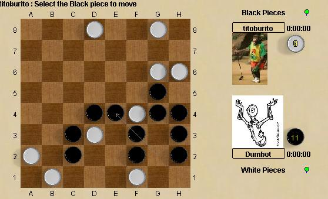

Lines of Action
Lignes d'action est un jeu de connexion original. Les joueurs débutent
avec leurs pions séparés en deux groupes opposés et
ont comme but de les unifiés en un groupe unique. Les pions
se déplacent d'autant de cases qu'il y a de pions sur la ligne de
leur déplacment. Ces règles complètes créent
un jeu d'affrontement particulier, avec un bon équilibre entre stratégie
et tactique.
Le jeu étant relativement ancien et bien connu, il en existe plusieurs
variantes ... dont une seule, LOAPS, est pratiquée
ici. A l'origine, la variante LOAPS avait été créé
pour une compétition de programation du jeu.
Robots : les robots peuvent être
battus, mais pas aisément.
|

|